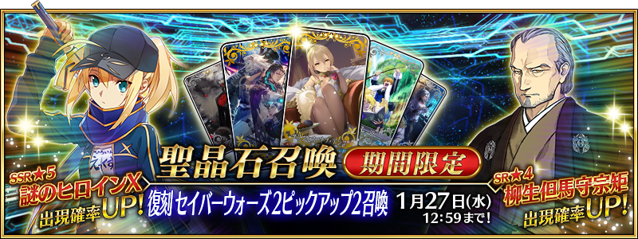
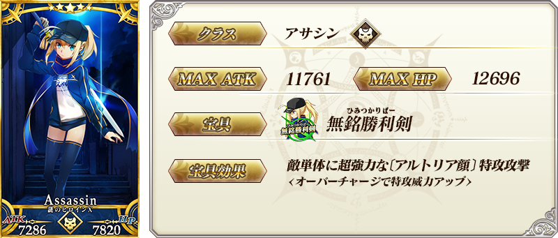
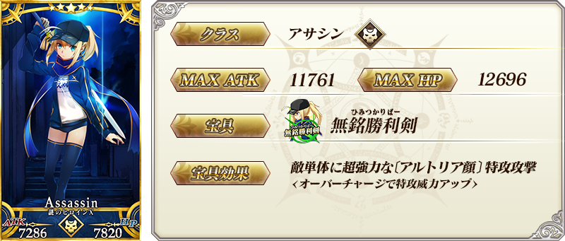
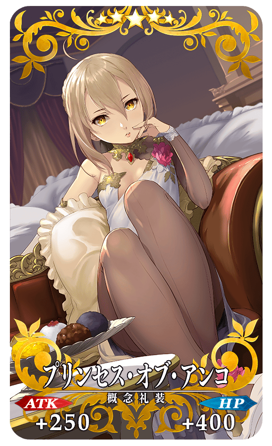
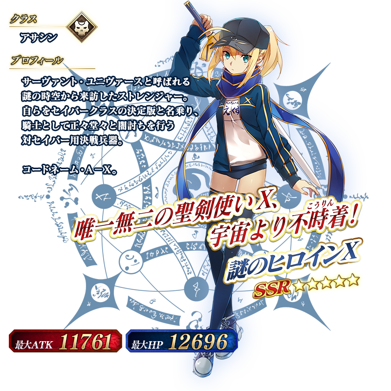
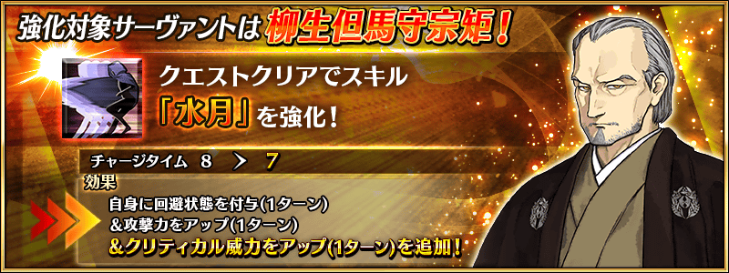
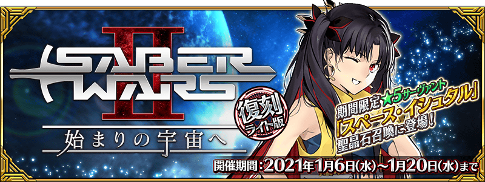
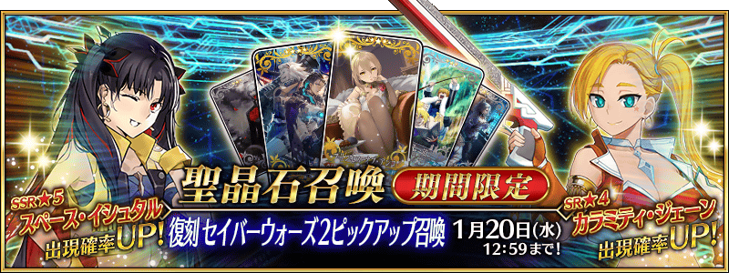

◆「復刻 Saber Wars２Pick Up2召喚」期間◆
期間:2021年1月13日(三) 17:00～1月27日(三) 11:59
期間限定「復刻 Saber Wars２Pick Up2召喚」舉辦！
變更在2019年舉辦的「Saber Wars２Pick Up2召喚」一部份內容進行復刻。
※就算未滿足活動參加條件的狀態也能進行本召喚。
本次從期間限定活動「復刻:Saber Wars２ ～邁向初始的宇宙～ 輕量版」關聯從者之中，下述的從者Pick Up！
▼期間限定從者
・★5(SSR)謎之女主角X
▼Pick Up從者
・★4(SR)柳生但馬守宗矩
另外，2019年的「Saber Wars２Pick Up召喚」及「Saber Wars２Pick Up2召喚」中登場的下述的期間限定概念禮裝Pick Up！ ・★5(SSR)プリンセス・オブ・アンコ ・★4(SR)プラネット・ロック ・★3(R)文武一道 裝備上述3種概念禮裝的話，在期間限定活動「復刻:Saber Wars２ ～邁向初始的宇宙～ 輕量版」中會提升活動道具的掉落獲得數。
Pick Up期間中，Pick Up對象從者與概念禮裝的出現機率提升！
詳情請在聖晶石召喚畫面左下的召喚詳細確認。
11次召喚中確定1張★4(SR)以上和確定1位★3(R)以上的從者！ ※確定★4(SR)以上包含從者和概念禮裝。
◆有關從者的注意◆
※下述的從者在Pick Up期間結束後不會追加到故事召喚。
・★5(SSR)謎之女主角X
※本召喚的Pick Up期間中，透過故事進行所追加下述的從者就算通過各章前也能入手。
・★4(SR)柳生但馬守宗矩
※下述的從者在Pick Up期間結束後仍會在故事召喚被抽出。
・★4(SR)柳生但馬守宗矩
◆有關概念禮裝的注意◆
※請注意會做為抽出對象的期間限定概念禮裝只限下述的概念禮裝，其他的期間限定概念禮裝為抽出對象外。
・★5(SSR)プリンセス・オブ・アンコ
・★4(SR)プラネット・ロック
・★3(R)文武一道
※下述的概念禮裝，Pick Up期間中也能靠友情點數召喚獲得。
・★3(R)文武一道
※在自動變還設定登錄★3(R)概念禮裝的情況，下述的概念禮裝會變成自動變還的對象。
・★3(R)文武一道

 
※上述「★5(SSR)謎之女主角X」的卡面為靈基再臨第1階段。

※上述「★5(SSR)謎之女主角X」的卡面為靈基再臨第1階段。

 ※上述「★4(SR)柳生但馬守宗矩」的卡面為靈基再臨第1階段。
※上述「★4(SR)柳生但馬守宗矩」的卡面為靈基再臨第1階段。
|  |
★★★★★SSR |

|
★★★★SR
|


|
★★★R
|

 ※上述「★5(SSR)謎之女主角X」的立繪為靈基再臨第1階段。
做為期間限定活動「復刻:Saber Wars２ ～邁向初始的宇宙～ 輕量版」的報酬，「★5(SSR)謎之女主角X(Assassin)」的靈衣開放權登場！
可入手上述靈衣開放權做為活動道具交換的報酬。
另外，想要靈衣開放的話，除了靈衣開放權外必須再加上一些開放條件。
※活動道具交換中交換的靈衣開放權，在期間限定活動「Saber Wars２ ～邁向初始的宇宙～」交換過靈衣開放權的情況，本活動中無法交換，也無法獲得稀有稜鏡。
◆有關靈衣開放權的注意◆
※本次追加的「★5(SSR)謎之女主角X(Assassin)」的靈衣是只有外觀的變化，語音沒變化的「簡易靈衣」。
※「★5(SSR)謎之女主角X」的靈衣開放權，只限期間限定活動「復刻:Saber Wars２ ～邁向初始的宇宙～ 輕量版」的活動舉辦期間才能入手。
※請注意未持有「★5(SSR)謎之女主角X(Assassin)」的情況，可入手靈衣開放權。但無法進行靈衣開放。


「靈衣開放」是自強化畫面進行。
※「靈衣開放」後會自動切換戰鬥角色和圖示。若想回到「靈衣開放」前的狀態和變成其他再臨階段的情況，可自從者詳細畫面變更。 ※進行「靈衣開放」不會讓職階和能力等有所變化。
介紹開放簡易靈衣「謎之女主角Z」「★5(SSR)謎之女主角X(Assassin)」的寶具演出！
在「Fate/Grand Order」官方網站內的公告中，以影片公開寶具演出，敬請確認。
介紹在本召喚Pick Up的2位從者寶具演出！
在「Fate/Grand Order」官方網站內的公告中，以影片公開寶具演出，敬請確認。
【★5(SSR)謎之女主角X】
【★4(SR)柳生但馬守宗矩】
強化「★4(SR)柳生但馬守宗矩」的特別關卡「從者強化關卡」，在迦勒底之門永久追加。
不僅進行對象從者的強化，也可獲得聖晶石做為關卡通過報酬。
※從者強化關卡請注意在沒有文字冒險部份。
◆開放條件◆
持有的強化對象從者，必須使其最終再臨。
※未持有對象從者的話，不會出現關卡。
※關卡沒有舉辦期限。

其他還有，
・復刻:Saber Wars２ ～邁向初始的宇宙～ 輕量版
・復刻 Saber Wars２Pick Up召喚
以期間限定舉辦中！
關於詳情，請自下述橫幅確認。
■「復刻:Saber Wars２ ～邁向初始的宇宙～ 輕量版」詳細情報 
■「復刻 Saber Wars２Pick Up召喚」詳細情報 